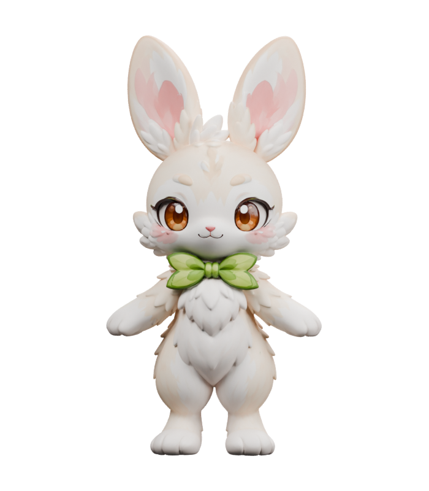
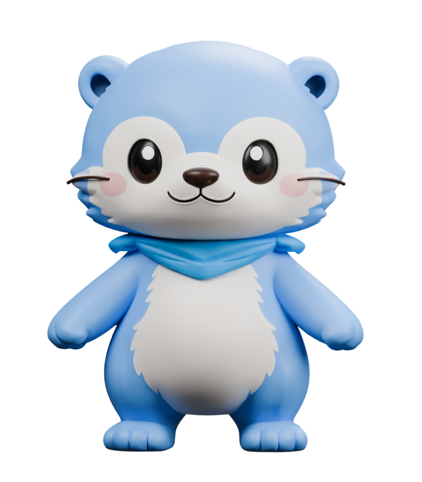
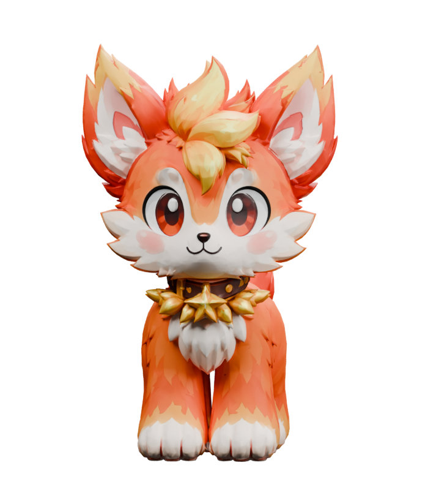

GRASS001 / 003
Waking up your companion…
BUNNI
Bunni
A leafy bow and long ears catching the forest breeze.
Drag to orbit · Scroll to zoom · Right-drag to pan
XITAO LIAO · CHARACTER & MOTION STUDIES
A little curiosity. A little magic.
From a forest, a flame and a winding river.
Meet three fantasy friends, each with a spirit of their own.

01 / BUNNI
03 / OTTI
02 / EMBERMEET YOUR COMPANIONS
Three personalities. One little world.EXPLORE IN 3D
A leafy bow and long ears catching the forest breeze.
BEHIND THE LITTLE WORLD
A character and animation collection made for a fantasy pet game. Original character concepts become 3D companions through AI-assisted modeling, mesh refinement and rigging in Blender, with a distinct movement style for each character.
Explore Ember’s four-legged run, Bunni’s two-footed hops and Otti’s gentle waddle, along with blinking, tail motion and defeat animations.